Saint-Brévin 2007
Les Gonflés à Bloc ! Cette année, sous le signe de la Bulle. Chaque participant en reçoit une, transparente, avec un petit ruban brodé à l'intérieur. Mais, comment ils l'ont rentré ???

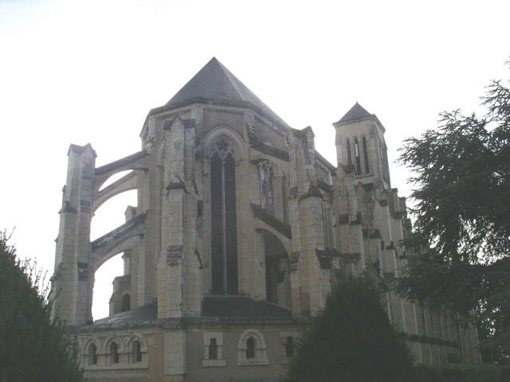
En route, comme d'hab, je fais un peu de tourisme... A Montjean, d'abord, dont l'église "néogothique" domine la Loire entre Angers et Nantes.

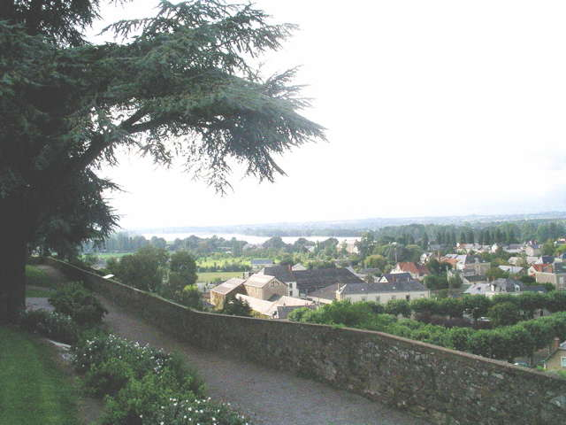
De la terrasse, un magnifique panorama qui méritait un château, rasé plus tard pour construire l'église, dommage...

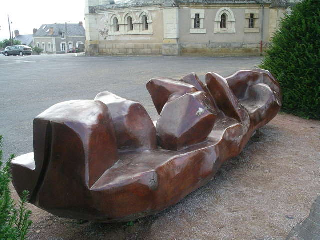
L'architecture mobilière est très particulière, à base de troncs d'arbres sculptés...

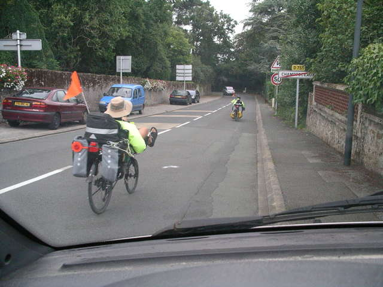
Je continue à longer la Loire, en doublant 2 aventuriers en vélo... couché ! Mon fils en avait un mais à Paris, il a disparu malgré 2 antivols de moto en U. Si on luttait un peu plus contre le vol des vélos à Paris, la circulation y serait peut-être aussi plus facile...

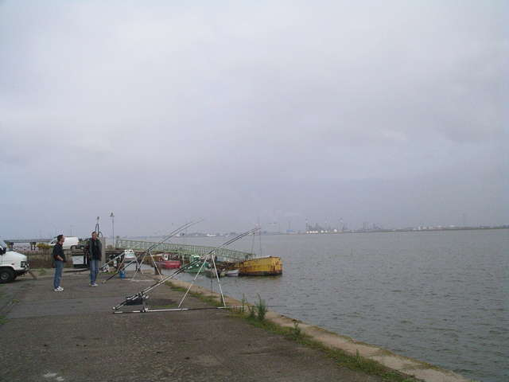
Escale à Paimboeuf pour déjeuner. Plein de camping-cars arrêtés avec la vue sur la Loire. Paimboeuf est un ancien port avec un solide quai et des chantiers navals abandonnés et pleins de ferraille...

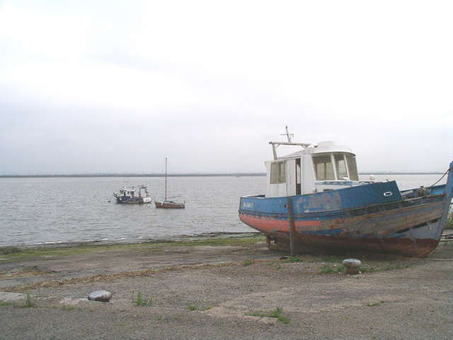
Le départ d'un canal parallèle permettait de remonter la Loire au temps où elle n'était pas draguée. Il reste quand même un bateau, finalement, même s'il n'est pas tout neuf !

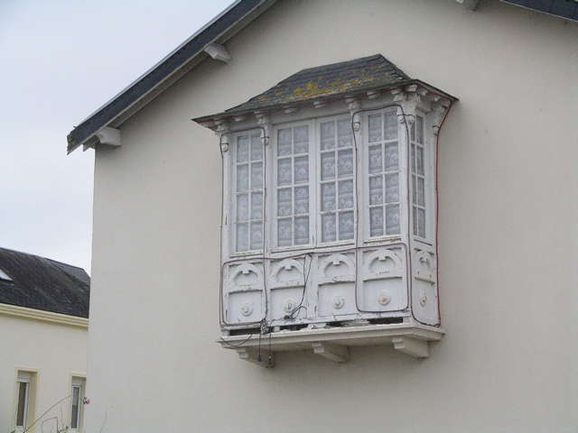
L'architecture possède encore quelques restes de splendeur, comme cette loggia donnant sur la Loire...

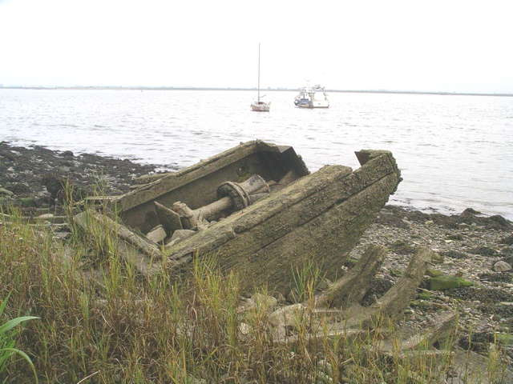
Mais la batellerie n'offre plus guère que de pittoresques épaves plus que rongées...
Avant St-Brévin, je suis encore passé à Préfailles, je ferai un reportage séparé sur ce curieux monument du cerf-volant ancien.

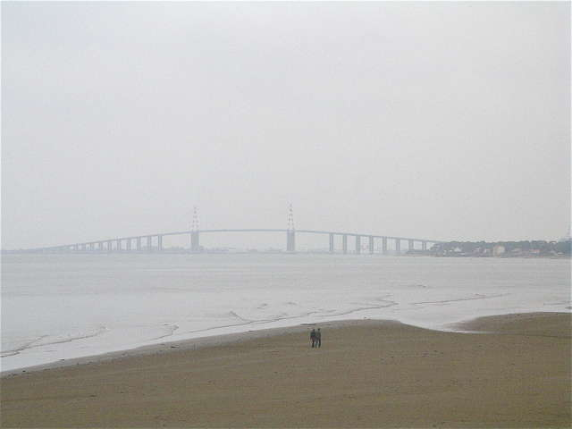
Enfin sur le parking de Saint-Brévin-Les-Pins ! En avançant, on voit le pont de Saint-Nazaire et les chantiers où a été construit entre autres le Queen Mary 2, et qui contient encore une grosse pointure qui a l'air finie... !

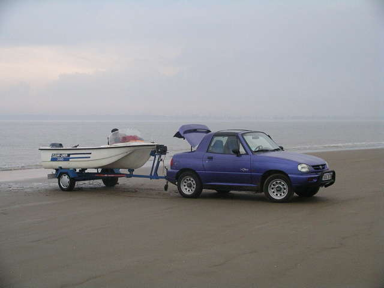
Sur la plage, on peut rouler jusqu'au bord de l'eau, le sable est dur. Ce Suzuki X90 4x4 surprend par sa brièveté mais il s'est vendu en série (peu...) !

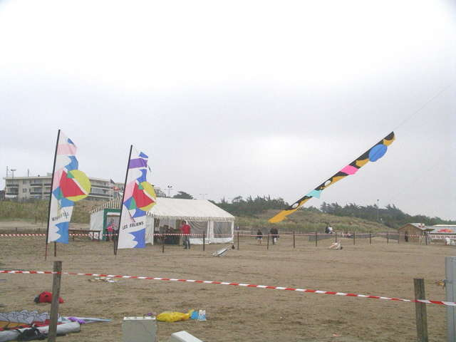
Samedi, festival. Les Eoliens ont beaucoup construit : une déco de ligne, des bannières et des deltas bien décorés, dont certains sont partis à la mer malheureusement...

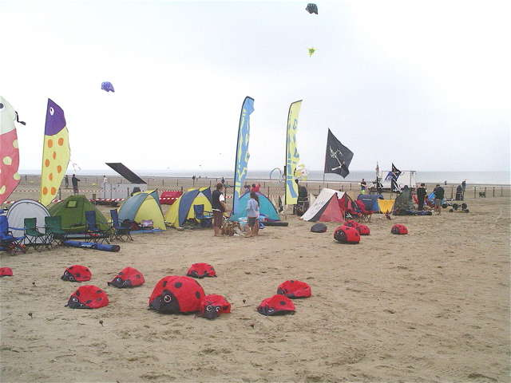
Une bonne initiative, les tentes se mettent sur le côté des terrains pour laisser la vue aux spectateurs qui arrivent...

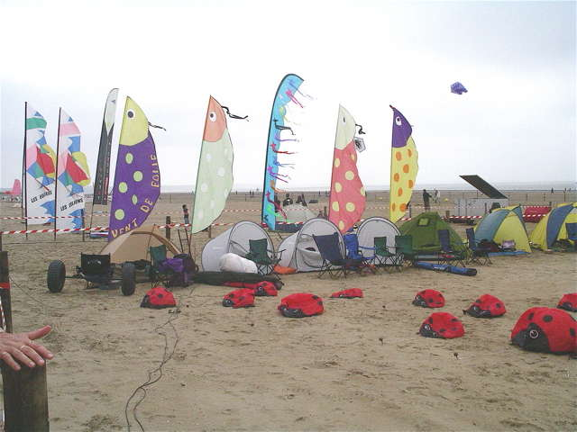
L'équipe vierzonnaise est là avec ses tentes, ses bannières, ses coccinelles et ses cerfs-volants dont le grand flow-form et une brochette de Jangang ou quel que soit le nom qu'ils leur donnent (voir plus bas)...

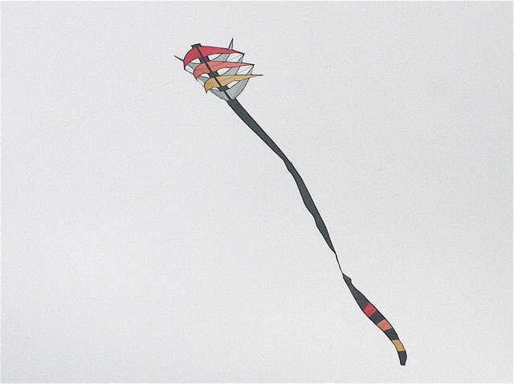
Côté nouveauté, le palmarès n'est pas très riche (mea culpa, mes projets traînent, mes Albatros sont obligés de voler à un rythme effréné...). On note ce joli cerf-volant composé d'arcs souples et entrecroisés...

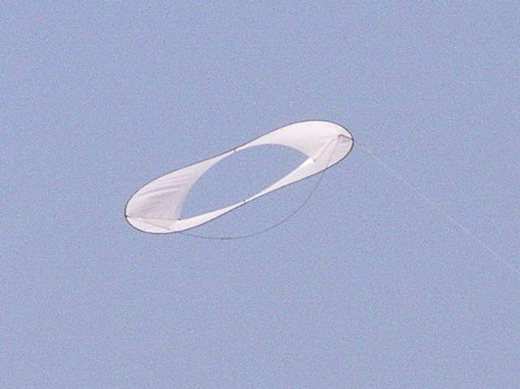
Zézé a également créé ce modèle encore en cours d'étude, qui vole mais qui devrait évoluer pour être bien stable et pourtant passer du monofil au 4-lignes en un tour de main !

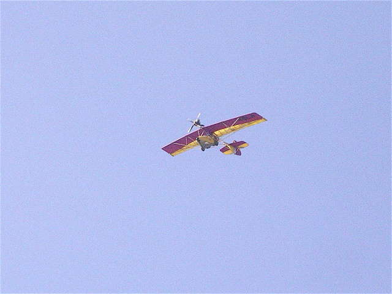
Pour meubler, un ULM passe à hauteur de cerf-volant, voire plus bas...

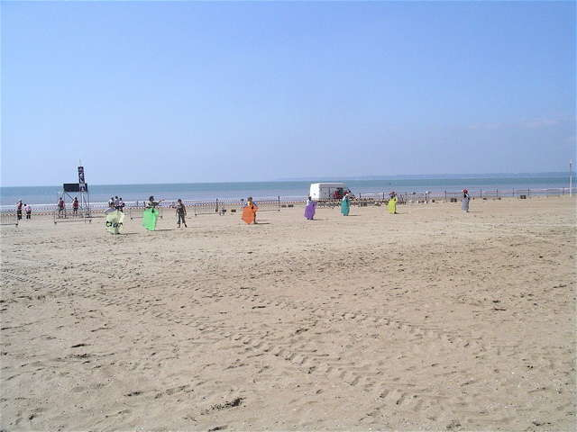
Au programme, des combats de rokkakus. Les enfants d'abord, qui ont construit des cerfs-volants et qui brûlent de les faire voler. Alors on se rassemble, on s'aligne, la ficelle est bien attachée...

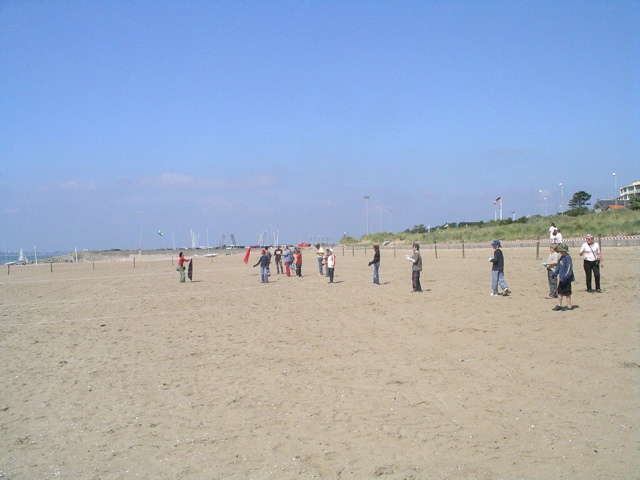
Prêts pour le décollage de leur vie, ça trépigne...

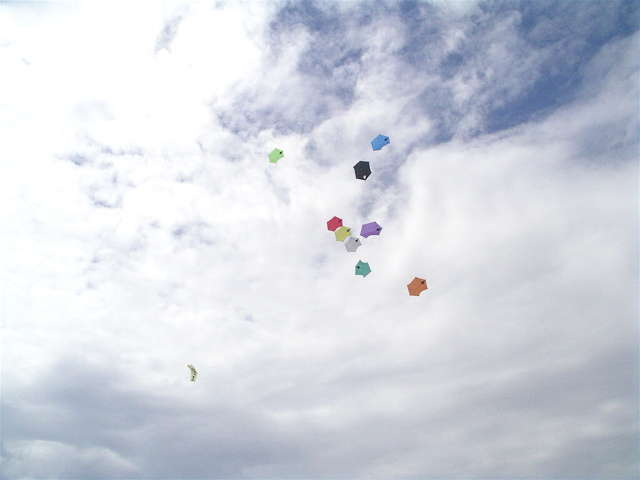
Et là-haut, un beau rassemblement comme on n'en voit jamais dans les combats de professionnels rusés !

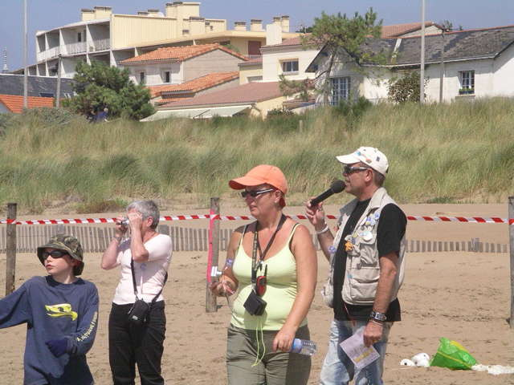
C'est Cyril qui commente avec son brio et sa profonde connaissance de la chose cervolantesque habituelles...

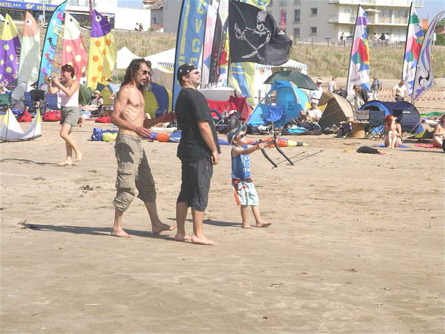
Yves a trouvé une petite Nasa pour le fils de Jean-Claude qui se débrouille déjà comme un chef et se lance dans la traction...

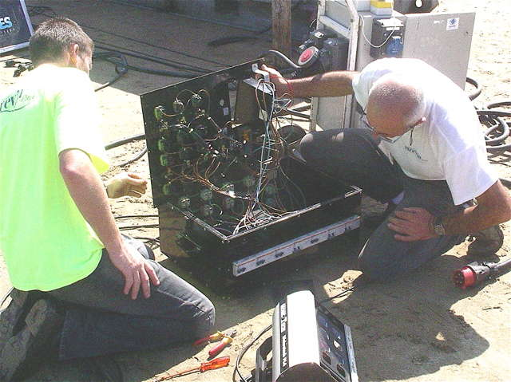
De leur côté, les électriciens bossent d'arrache-pied à base de câbles gros comme le poignet et de boîtiers mystérieux !

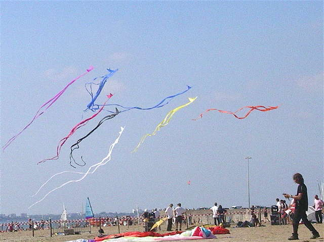
Bon, j'ai trouvé le nom, les CVs de vent de Folie sont des... Folyangs, bien sûr ! Ca ressemble à s'y méprendre à des Jangangs, mais avec 2 queues au lieu d'une.

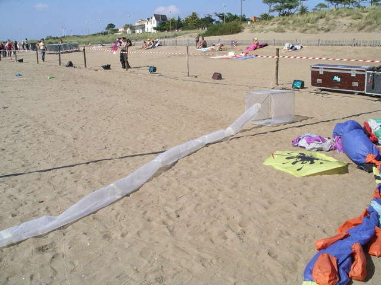
Le festival étant placé sous le signe de la bulle, ce CV a été construit en plastique à bulles, léger mais pas follement aérodynamique. Il aurait fallu un vent plus fort, mais il a volé un moment...

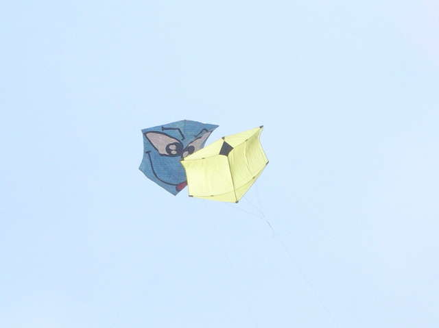
Les cerfs-volants des enfants sont soit en Tyvek peint, soit en spi cousu !

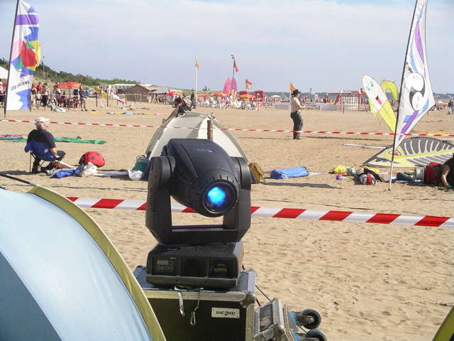
Les projos se multiplient. Ceux-là sont télécommandés à distance par ordinateur. Selon mon expérience, ça n'a guère d'intérêt en vol de nuit, par rapport à des poursuites manuelles qui permettent d'illuminer effectivement les cerfs-volants à tour de rôle, en plus de l'éclairage général...

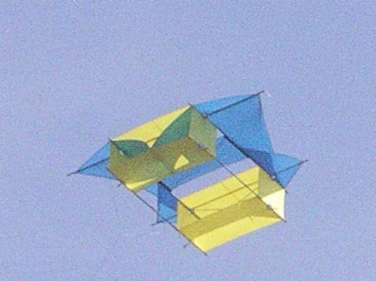
On voit voler aussi une copie du bel "Aéro-Photo" de Gomez (voir reportage à venir sur Préfailles)...

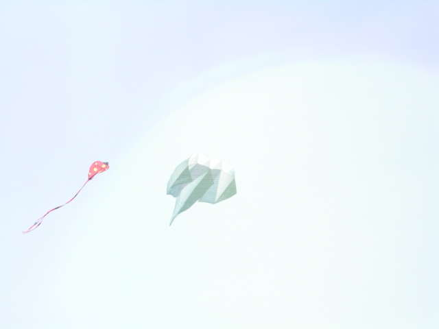
Et on retrouve le flow-form unicorne que François Périault avait fait voler à Penvins. Très stable à part les petits dandinements continuels...

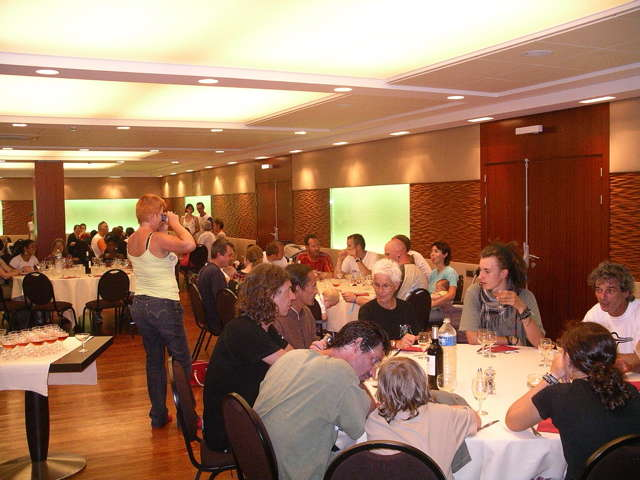
Avant le vol de nuit, dîner. La salle de l'Etoile a été rasée pour faire un lotissement et reconstruite à dache. Le repas trouve une place de choix au Casino nouveau, pas bien beau (genre HLM) mais accueillant ! La salle en sous-sol est belle et bien équipée...

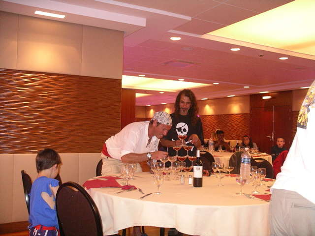
Les Pirates sont venus en costume comme d'hab ! Jean-Mi et Antoine ont trouvé une nouvelle manière de boire le champagne !

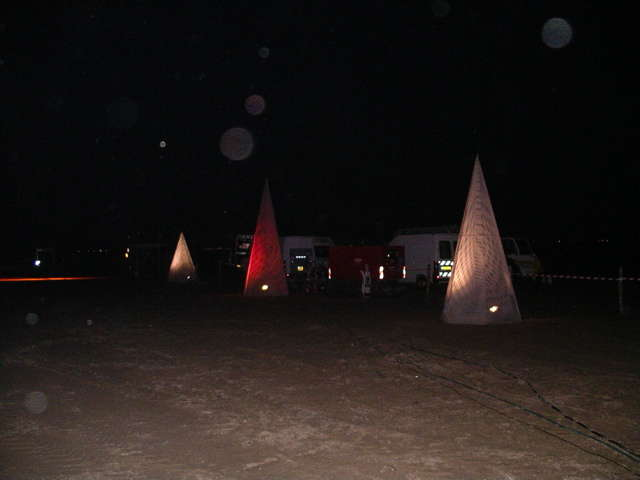
Vol de nuit. Nous sommes accueillis comme tous les ans par les belles pyramides en grille sur lesquelles les éclairages créent de très décoratifs moirages...

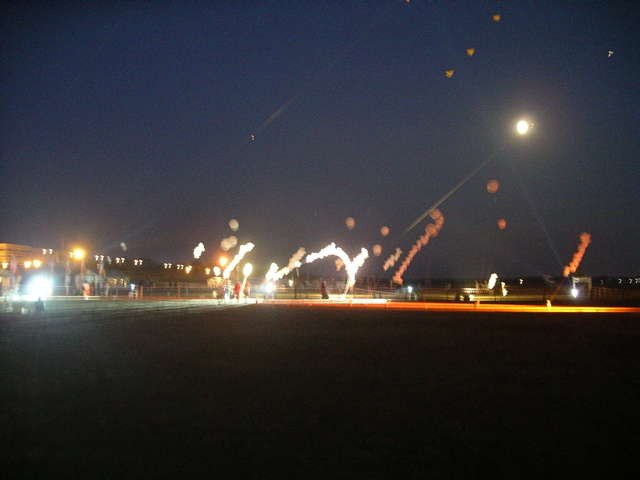
Toute la journée, les Eoliens ont gonflé des ballons pour créer ce splendide décor ondulant au gré du vent ! Avant le vol des CVs, les boomeranguistes feront une démonstration avec des boomerangs lumineux...

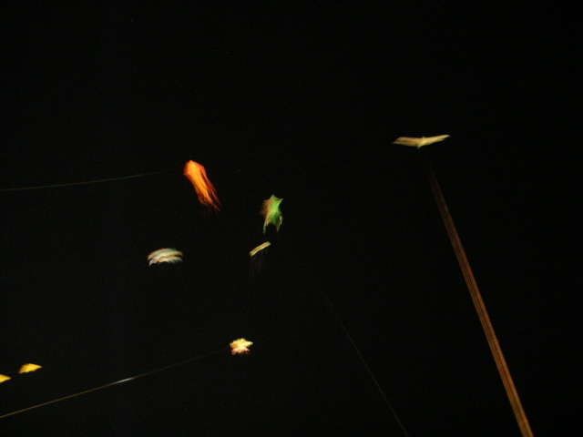
Le vol de nuit a lieu par vent de terre, le vent au sol est quasi-nul et turbulent, il faut monter assez haut et ne pas être trop serré, mais ça enlève un peu de présence aux cerfs-volants ! Sinon, l'éclairage est plus qu'abondant, bravo et merci.

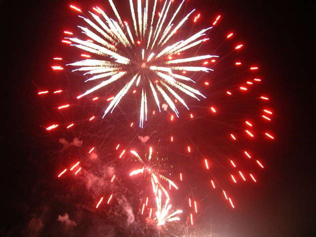
Les cerfs-volants se posent, le feu d'artifice éclate. Un feu splendide, abondant et varié...

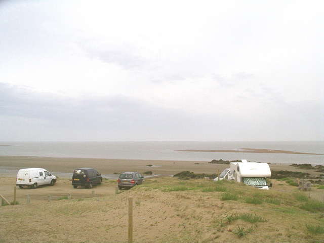
Après le vol de nuit, le parking est ouvert pour nos camping-cars, mais sur le chemin de façon qu'on ne nous voie pas de la route, ça ferait des jaloux. C'est plus loin, mais le site est plus beau, on se réveillera en dominant la mer en face...

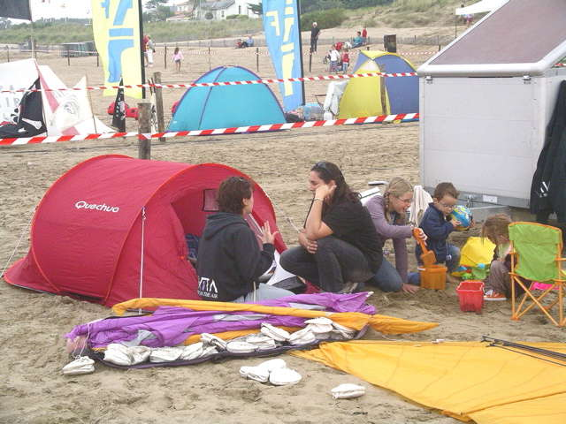
Au matin, retour sur le terrain. Matin pas terrible, petite pluie mais ça se lève complètement. Lorane va pouvoir inaugurer sa petite tente rouge minimale...

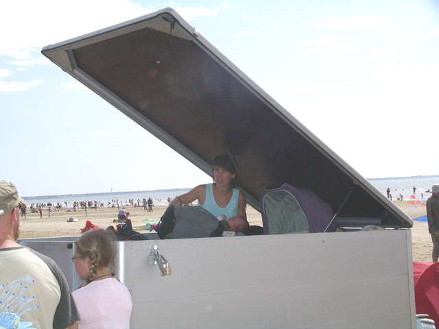
Pour être tranquille avec son bébé, Blandine s'isole dans la remorque Awita, maintenant à moitié vide de matériel !

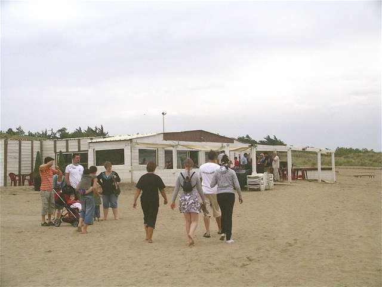
Comme hier, petit exode pour un petit pot au Cassandra, en bout de plage ! Il y a plein de place, les sièges et les tables ont été évacués...

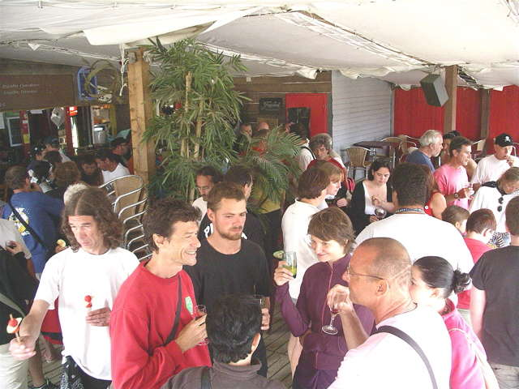
Sangria et jus de fruits, brochettes diverses (exemple : pomme, pastèque... à gauche), amuse-gueules chaud, le Cassandra ne se moque pas de nous...

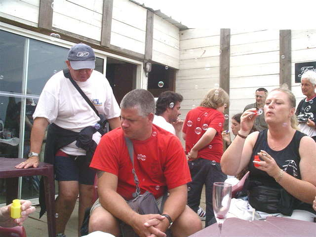
C'est le festival à bulles, alors on nous distribue... des gadgets à bulles ! Lara s'amuse comme une folle avec Olivier et Guy...

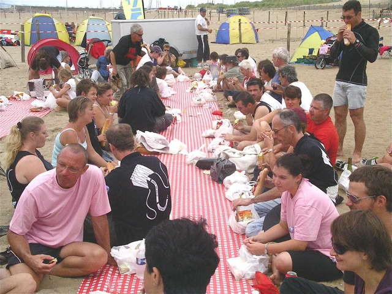
Le déjeuner selon les bonnes habitudes en picnic en commun sur les nappes déroulées sur la plage...

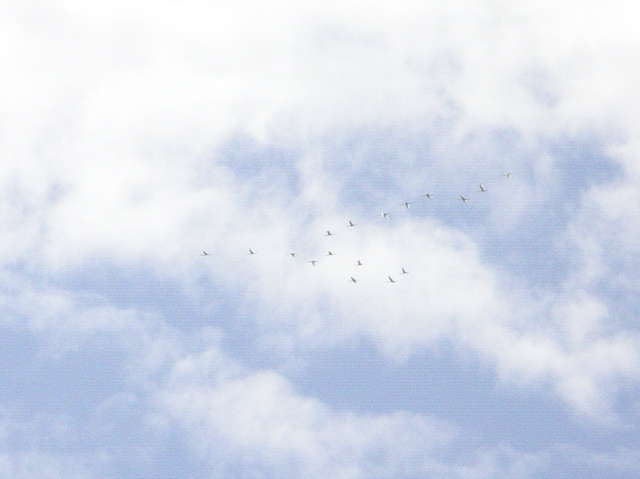
Un vol d'oiseaux en formation en V nous survole, bon présage pour l'après-midi...

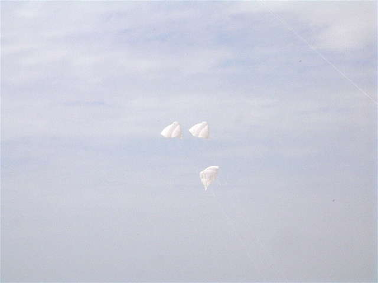
Les Pirates présentent leur ballet de Nasa-Wings, ils monteront à 5 ou six... danseurs !

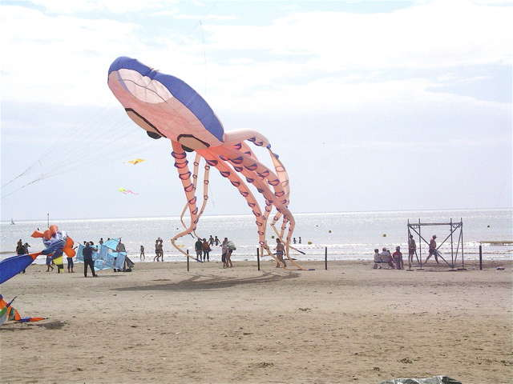
Evidemment, on retrouve tous les classiques mais vous les connaissez : les deltas des Awitas, leur poisson vert, la pieuvre rose, des pyrodeltas, etc...

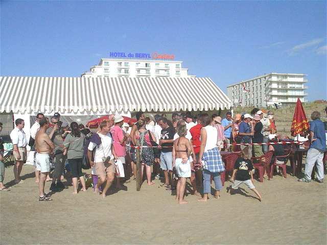
Pour finir, réunion devant le barnum pour une distribution des prix et un pot d'adieu...

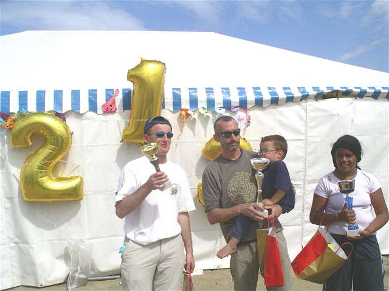
Devant le podium en lettres d'or, les lauréats du combat de Rokkakus (j'ai fait 2ème au 1er, mais coupé... et rattrapé in extremis par la ficelle au-dessus de la mer à la 2ème manche)...

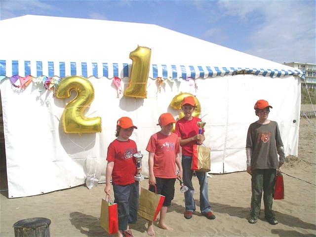
Il y a aussi le podium des enfants, avec 2 deuxièmes et un troisième ! Eux aussi auront de belles coupes à mettre sur leurs étagères...

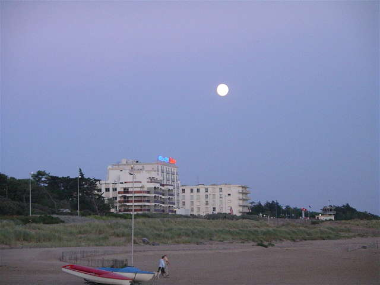
C'est fini pour cette année, dommage de ne plus voler avec cette belle lune ! Je vais quand même rester jusqu'au lundi pour éviter les retours classés "orange".

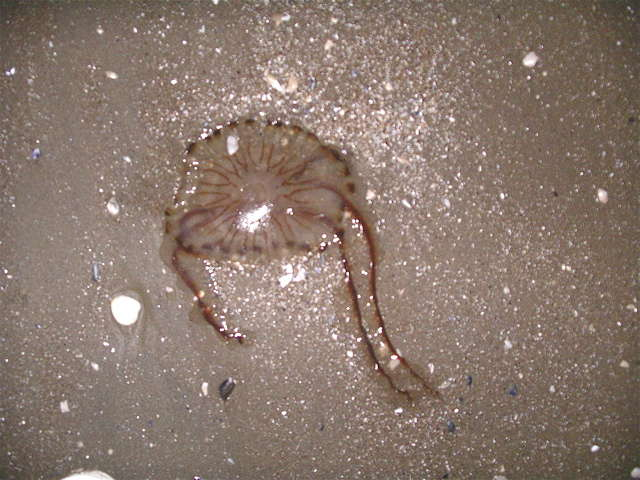
Je ferai encore un grand tour le soir le long de la plage pour voir si la marée basse n'a pas découvert le Rokkaku tout neuf de David, parti sur les flots la ficelle ayant été coupée par un anonyme inconnu... Je ne trouverai rien, sauf cette jolie méduse avec de beaux tentacules colorés...
Saint-Brévin : J'ai trouvé que l'accueil et l'organisation étaient bien cette année. Il me semble aussi que, pour le nombre de cervolistes invités, il n'y avait pas beaucoup de cerfs-volants en l'air. Je sais bien que les conditions n'étaient pas faciles avec le vent de terre, mais avec un peu d'effort, on pouvait voler ! Alors ne tuez pas la poule aux oeufs d'or...